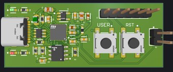
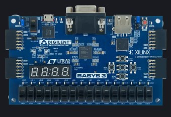
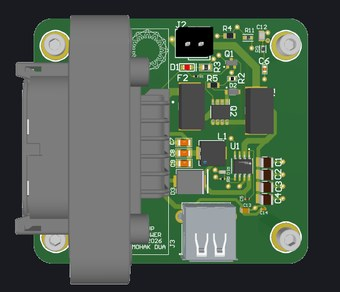
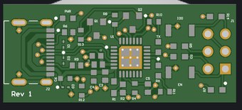

Experience
Projects

GoKey, a USB Security Key
→
Altium · STM32L4 · ATECC608B · USB-C
A USB-C hardware security key that stores its private keys in a dedicated secure element instead of the microcontroller's flash.

FPGA Mixed-Signal Instrument
→
SystemVerilog · Artix-7 · Vivado · Python
An FPGA-based oscilloscope and 8-channel logic analyzer on an Artix-7, with a Python app on the PC for display and export.
ELRS Flight Controller
→
KiCad · STM32F405 · ExpressLRS · Betaflight
A four-layer flight controller for a 5-inch quad with the 2.4 GHz ExpressLRS receiver built into the board.

UMN Solar Vehicle, Power Board
→
Altium · TPS54560 · power
A power-distribution board for the solar car's Raspberry Pi driver interface, with a load switch and a 5 V buck. It's running on this year's car.

USB-to-UART Programmer
→
Altium · CP2102N · USB-C
A programming board I designed during my internship for flashing an ESP32-based system. It replaced a slow, jumpered dev-board setup with one-click flashing and became the team's standard way to flash it.
Wireless Motion-Controlled Display
→
PIC24 · LIS3DH · RFM69 · C
A four-person class project where two PIC24 boards talk over radio. Tilting the accelerometer on one moves a shape around an 8x8 LED matrix on the other.